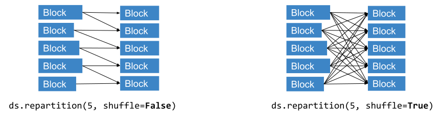

xpark.dataset.Dataset#
- class xpark.dataset.Dataset(ray_dataset: Dataset)[source]#
Construct a
Datasetfrom a ray.data.Dataset. In general, you do not need to manually call this constructor. Please use the Read API to construct it.- Parameters:
ray_dataset – An instance of
ray.data.Dataset.
Methods
aggregate(*aggs)Aggregate values using one or more functions.
columns([fetch_if_missing])Returns the columns of this Dataset.
copy([deep_copy])Copy the Dataset.
count()Count the number of rows in the dataset.
drop_columns(cols, *[, compute, concurrency])Drop one or more columns from the dataset.
filter(expr[, compute])Filter out rows that don't satisfy the given predicate.
groupby(key[, num_partitions])Group rows of a
Datasetaccording to a column.Return the list of input files for the dataset.
iter_batches(*[, prefetch_batches, ...])Return an iterable over batches of data.
limit(limit)Truncate the dataset to the first
limitrows.map(fn, *[, compute, fn_args, fn_kwargs, ...])Apply the given function to each row of this dataset.
map_batches(fn, *[, batch_size, compute, ...])Apply the given function to batches of data.
Execute and materialize this dataset into object store memory.
max([on, ignore_nulls])Return the maximum of one or more columns.
mean([on, ignore_nulls])Compute the mean of one or more columns.
min([on, ignore_nulls])Return the minimum of one or more columns.
repartition([num_blocks, ...])schema([fetch_if_missing])Return the schema of the dataset.
select_columns(cols, *[, compute, concurrency])Select one or more columns from the dataset.
show([limit])Print up to the given number of rows from the
Dataset.Return the in-memory size of the dataset.
sort(key[, descending, boundaries])Sort the dataset by the specified key column or key function.
std([on, ddof, ignore_nulls])Compute the standard deviation of one or more columns.
sum([on, ignore_nulls])Compute the sum of one or more columns.
take([limit])Return up to
limitrows from theDataset.take_all([limit])Return all of the rows in this
Dataset.take_batch([batch_size, batch_format])Return up to
batch_sizerows from theDatasetin a batch.Convert this
Datasetinto a distributed set of PyArrow tables.to_pandas([limit])Convert this
Datasetto a single pandas DataFrame.unique(column[, ignore_nulls])List the unique elements in a given column.
with_column(column_name, expr, **ray_remote_args)Add a new column to the dataset via an expression.
write_csv(path, *[, filesystem, ...])Writes the
Datasetto CSV files.write_iceberg(table_identifier[, ...])Writes the
Datasetto an Iceberg table.write_json(path, *[, filesystem, ...])Writes the
Datasetto JSON and JSONL files.write_lance(path, *[, schema, mode, ...])Write the dataset to a Lance dataset.
write_numpy(path, *, column[, filesystem, ...])Writes a column of the
Datasetto .npy files.write_parquet(path, *[, partition_cols, ...])Writes the
Datasetto parquet files under the providedpath.- aggregate(*aggs: AggregateFn) Any | dict[str, Any][source]#
Aggregate values using one or more functions.
Use this method to compute metrics like the product of a column.
Note
This operation will trigger execution of the lazy transformations performed on this dataset.
Note
This operation requires all inputs to be materialized in object store for it to execute.
Examples
import xpark from xpark.dataset.aggregate import AggregateFn ds = xpark.dataset.from_items([{"number": i} for i in range(1, 10)]) aggregation = AggregateFn( init=lambda column: 1, # Apply this to each row to produce a partial aggregate result accumulate_row=lambda a, row: a * row["number"], # Apply this to merge partial aggregate results into a final result merge=lambda a1, a2: a1 * a2, name="prod" ) print(ds.aggregate(aggregation))
{'prod': 362880}Time complexity: O(dataset size / parallelism)
- Parameters:
*aggs –
Aggregationsto perform.- Returns:
A
dictwhere each each value is an aggregation for a given column.
- columns(fetch_if_missing: bool = True) list[str] | None[source]#
Returns the columns of this Dataset.
Note
If this dataset consists of more than a read, or if the schema can’t be determined from the metadata provided by the datasource, or if
fetch_if_missing=True(the default), then this operation will trigger execution of the lazy transformations performed on this dataset.Time complexity: O(1)
Example
>>> import xpark >>> # Create dataset from synthetic data. >>> ds = xpark.dataset.from_range(1000) >>> ds.columns() ['id']
- Parameters:
fetch_if_missing – If True, synchronously fetch the column names from the schema if it’s not known. If False, None is returned if the schema is not known. Default is True.
- Returns:
A list of the column names for this Dataset or None if schema is not known and fetch_if_missing is False.
- count() int[source]#
Count the number of rows in the dataset.
For Datasets which only read Parquet files (created with
read_parquet()), this method reads the file metadata to efficiently count the number of rows without reading in the entire data.Note
If this dataset consists of more than a read, or if the row count can’t be determined from the metadata provided by the datasource, then this operation will trigger execution of the lazy transformations performed on this dataset.
Examples
>>> import xpark >>> ds = xpark.dataset.from_range(10) >>> ds.count() 10
- Returns:
The number of records in the dataset.
- drop_columns(cols: List[str], *, compute: str | None = None, concurrency: int | None = None, **ray_remote_args) Dataset[source]#
Drop one or more columns from the dataset.
Examples
>>> import xpark >>> ds = xpark.dataset.read_parquet("s3://anonymous@xpark-example-data/iris.parquet") >>> ds.schema() Column Type ------ ---- sepal.length double sepal.width double petal.length double petal.width double variety string >>> ds.drop_columns(["variety"]).schema() Column Type ------ ---- sepal.length double sepal.width double petal.length double petal.width double
Time complexity: O(dataset size / parallelism)
- Parameters:
cols – Names of the columns to drop. If any name does not exist, an exception is raised. Column names must be unique.
compute – This argument is deprecated. Use
concurrencyargument.concurrency – The maximum number of Xpark workers to use concurrently.
ray_remote_args – Additional resource requirements to request from Xpark (e.g., num_gpus=1 to request GPUs for the map tasks). See
ray.remote()for details.
- filter(expr: Expr | DedupOp, compute: ComputeStrategy | None = None, **ray_remote_args) Dataset[source]#
Filter out rows that don’t satisfy the given predicate.
You can use either a function or a callable class or an expression to perform the transformation. For functions, Ray Data uses stateless Ray tasks. For classes, Ray Data uses stateful Ray actors. For more information, see Stateful Transforms.
Examples
>>> from xpark.dataset import from_range >>> from xpark.dataset.expressions import col >>> ds = from_range(100) >>> # Using predicate expressions (preferred) >>> ds.filter(expr=(col("id") > 10) & (col("id") < 20)).take_all() [{'id': 11}, {'id': 12}, {'id': 13}, {'id': 14}, {'id': 15}, {'id': 16}, {'id': 17}, {'id': 18}, {'id': 19}]
Time complexity: O(dataset size / parallelism)
- Parameters:
expr – An expression that represents a predicate (boolean condition) for filtering. Can be either a predicate expression from ray.data.expressions or a xpark filter.
compute –
The compute strategy to use for the map operation.
If
computeis not specified for a function, will useray.data.TaskPoolStrategy()to launch concurrent tasks based on the available resources and number of input blocks.Use
ray.data.TaskPoolStrategy(size=n)to launch at mostnconcurrent Ray tasks.If
computeis not specified for a callable class, will useray.data.ActorPoolStrategy(min_size=1, max_size=None)to launch an autoscaling actor pool from 1 to unlimited workers.Use
ray.data.ActorPoolStrategy(size=n)to use a fixed size actor pool ofnworkers.Use
ray.data.ActorPoolStrategy(min_size=m, max_size=n)to use an autoscaling actor pool frommtonworkers.Use
ray.data.ActorPoolStrategy(min_size=m, max_size=n, initial_size=initial)to use an autoscaling actor pool frommtonworkers, with an initial size ofinitial.
ray_remote_args – Additional resource requirements to request from Ray (e.g., num_gpus=1 to request GPUs for the map tasks). See
ray.remote()for details.
- groupby(key: str | List[str] | None, num_partitions: int | None = None) GroupedData[source]#
Group rows of a
Datasetaccording to a column.Use this method to transform data based on a categorical variable.
Note
This operation requires all inputs to be materialized in object store for it to execute.
Examples
import pandas as pd import xpark def normalize_variety(group: pd.DataFrame) -> pd.DataFrame: for feature in group.drop(columns=["variety"]).columns: group[feature] = group[feature] / group[feature].abs().max() return group ds = ( xpark.dataset.read_parquet("s3://anonymous@xpark-example-data/iris.parquet") .groupby("variety") .map_groups(normalize_variety, batch_format="pandas") )
Time complexity: O(dataset size * log(dataset size / parallelism))
- Parameters:
key – A column name or list of column names. If this is
None, place all rows in a single group.num_partitions – Number of partitions data will be partitioned into (only relevant if hash-shuffling strategy is used). When not set defaults to DataContext.min_parallelism.
- Returns:
A lazy
GroupedData.
See also
map_groups()Call this method to transform groups of data.
- input_files() list[str][source]#
Return the list of input files for the dataset.
Note
This operation will trigger execution of the lazy transformations performed on this dataset.
Examples
>>> import xpark >>> ds = xpark.dataset.read_csv("s3://anonymous@xpark-example-data/iris.csv") >>> ds.input_files() ['xpark-example-data/iris.csv']
- Returns:
The list of input files used to create the dataset, or an empty list if the input files is not known.
- iter_batches(*, prefetch_batches: int = 1, batch_size: int | None = 256, batch_format: str | None = 'default', drop_last: bool = False, local_shuffle_buffer_size: int | None = None, local_shuffle_seed: int | None = None, _collate_fn: Callable[[pyarrow.Table | pandas.DataFrame | Dict[str, ndarray]], CollatedData] | None = None) Iterable[pyarrow.Table | pandas.DataFrame | Dict[str, ndarray]][source]#
Return an iterable over batches of data.
This method is useful for model training.
Note
This operation will trigger execution of the lazy transformations performed on this dataset.
Examples
import xpark ds = xpark.dataset.read_images("example://image-datasets/simple") for batch in ds.iter_batches(batch_size=2, batch_format="numpy"): print(batch)
{'image': array([[[[...]]]], dtype=uint8)} ... {'image': array([[[[...]]]], dtype=uint8)}Time complexity: O(1)
- Parameters:
prefetch_batches – The number of batches to fetch ahead of the current batch to fetch. If set to greater than 0, a separate threadpool is used to fetch the objects to the local node and format the batches. Defaults to 1.
batch_size – The number of rows in each batch, or
Noneto use entire blocks as batches (blocks may contain different numbers of rows). The final batch may include fewer thanbatch_sizerows ifdrop_lastisFalse. Defaults to 256.batch_format – If
"default"or"numpy", batches areDict[str, numpy.ndarray]. If"pandas", batches arepandas.DataFrame.drop_last – Whether to drop the last batch if it’s incomplete.
local_shuffle_buffer_size – If not
None, the data is randomly shuffled using a local in-memory shuffle buffer, and this value serves as the minimum number of rows that must be in the local in-memory shuffle buffer in order to yield a batch. When there are no more rows to add to the buffer, the remaining rows in the buffer are drained.local_shuffle_seed – The seed to use for the local random shuffle.
- Returns:
An iterable over batches of data.
- limit(limit: int) Dataset[source]#
Truncate the dataset to the first
limitrows.Unlike
take(), this method doesn’t move data to the caller’s machine. Instead, it returns a newDatasetpointing to the truncated distributed data.Examples
>>> import xpark >>> ds = xpark.dataset.from_range(1000) >>> ds.limit(5).count() 5
Time complexity: O(limit specified)
- Parameters:
limit – The size of the dataset to truncate to.
- Returns:
The truncated dataset.
- map(fn: Callable[[Dict[str, Any]], Dict[str, Any]], *, compute: ComputeStrategy | None = None, fn_args: Iterable[Any] | None = None, fn_kwargs: Dict[str, Any] | None = None, fn_constructor_args: Iterable[Any] | None = None, fn_constructor_kwargs: Dict[str, Any] | None = None, num_cpus: float | None = None, num_gpus: float | None = None, memory: float | None = None, concurrency: int | Tuple[int, int] | Tuple[int, int, int] | None = None, ray_remote_args_fn: Callable[[], Dict[str, Any]] | None = None, **ray_remote_args) Dataset[source]#
Apply the given function to each row of this dataset.
Use this method to transform your data. To learn more, see Transforming rows.
You can use either a function or a callable class to perform the transformation. For functions, Xpark Dataset uses stateless Xpark tasks. For classes, Xpark Dataset uses stateful Xpark actors. For more information, see Stateful Transforms.
Tip
If your transformation is vectorized like most NumPy or pandas operations,
map_batches()might be faster.Warning
Specifying both
num_cpusandnum_gpusfor map tasks is experimental, and may result in scheduling or stability issues. Please report any issues to the Xpark team.Examples
import os from typing import Any, Dict import xpark def parse_filename(row: Dict[str, Any]) -> Dict[str, Any]: row["filename"] = os.path.basename(row["path"]) return row ds = ( xpark.dataset.read_images("s3://anonymous@xpark-example-data/image-datasets/simple", include_paths=True) .map(parse_filename) ) print(ds.schema())
Column Type ------ ---- image ArrowTensorTypeV2(shape=(32, 32, 3), dtype=uint8) path string filename string
Time complexity: O(dataset size / parallelism)
- Parameters:
fn – The function to apply to each row, or a class type that can be instantiated to create such a callable.
compute –
The compute strategy to use for the map operation.
If
computeis not specified for a function, will usexpark.dataset.TaskPoolStrategy()to launch concurrent tasks based on the available resources and number of input blocks.Use
xpark.dataset.TaskPoolStrategy(size=n)to launch at mostnconcurrent Xpark tasks.If
computeis not specified for a callable class, will usexpark.dataset.ActorPoolStrategy(min_size=1, max_size=None)to launch an autoscaling actor pool from 1 to unlimited workers.Use
xpark.dataset.ActorPoolStrategy(size=n)to use a fixed size actor pool ofnworkers.Use
xpark.dataset.ActorPoolStrategy(min_size=m, max_size=n)to use an autoscaling actor pool frommtonworkers.Use
xpark.dataset.ActorPoolStrategy(min_size=m, max_size=n, initial_size=initial)to use an autoscaling actor pool frommtonworkers, with an initial size ofinitial.
fn_args – Positional arguments to pass to
fnafter the first argument. These arguments are top-level arguments to the underlying Xpark task.fn_kwargs – Keyword arguments to pass to
fn. These arguments are top-level arguments to the underlying Xpark task.fn_constructor_args – Positional arguments to pass to
fn’s constructor. You can only provide this iffnis a callable class. These arguments are top-level arguments in the underlying Xpark actor construction task.fn_constructor_kwargs – Keyword arguments to pass to
fn’s constructor. This can only be provided iffnis a callable class. These arguments are top-level arguments in the underlying Xpark actor construction task.num_cpus – The number of CPUs to reserve for each parallel map worker.
num_gpus – The number of GPUs to reserve for each parallel map worker. For example, specify num_gpus=1 to request 1 GPU for each parallel map worker.
memory – The heap memory in bytes to reserve for each parallel map worker.
concurrency – This argument is deprecated. Use
computeargument.ray_remote_args_fn – A function that returns a dictionary of remote args passed to each map worker. The purpose of this argument is to generate dynamic arguments for each actor/task, and will be called each time prior to initializing the worker. Args returned from this dict will always override the args in
ray_remote_args. Note: this is an advanced, experimental feature.ray_remote_args – Additional resource requirements to request from Xpark for each map worker. See
ray.remote()for details.
See also
flat_map()Call this method to create new rows from existing ones. Unlike
map(), a function passed toflat_map()can return multiple rows.map_batches()Call this method to transform batches of data.
- map_batches(fn: Callable[[pyarrow.Table | pandas.DataFrame | Dict[str, ndarray]], pyarrow.Table | pandas.DataFrame | Dict[str, ndarray]] | Callable[[pyarrow.Table | pandas.DataFrame | Dict[str, ndarray]], Iterator[pyarrow.Table | pandas.DataFrame | Dict[str, ndarray]]] | type[_CallableClassProtocol], *, batch_size: int | None | Literal['default'] = None, compute: ComputeStrategy | None = None, batch_format: str | None = 'default', zero_copy_batch: bool = True, fn_args: Iterable[Any] | None = None, fn_kwargs: Dict[str, Any] | None = None, fn_constructor_args: Iterable[Any] | None = None, fn_constructor_kwargs: Dict[str, Any] | None = None, num_cpus: float | None = None, num_gpus: float | None = None, memory: float | None = None, concurrency: int | Tuple[int, int] | Tuple[int, int, int] | None = None, udf_modifying_row_count: bool = False, ray_remote_args_fn: Callable[[], Dict[str, Any]] | None = None, **ray_remote_args) Dataset[source]#
Apply the given function to batches of data.
This method is useful for preprocessing data and performing inference. To learn more, see Transforming batches.
You can use either a function or a callable class to perform the transformation. For functions, Xpark Dataset uses stateless Xpark tasks. For classes, Xpark Dataset uses stateful Xpark actors. For more information, see Stateful Transforms.
Tip
To understand the format of the input to
fn, calltake_batch()on the dataset to get a batch in the same format as will be passed tofn.Note
fnshould generally avoid modifying data buffers behind its input since these could be zero-copy views into the underlying object residing inside Xpark’s Object Store.To perform any modifications it’s recommended to copy the data you want to modify.
In rare cases when you can’t copy inside your UDF, you can instead specify
zero_copy_batch=Falseand then Xpark Dataset will copy the whole batch for you, providingfnwith a copy rather than a zero-copy view.Warning
Specifying both
num_cpusandnum_gpusfor map tasks is experimental, and may result in scheduling or stability issues. Please report any issues to the Xpark team.Examples
Call
map_batches()to transform your data.from typing import Dict import numpy as np import xpark def add_dog_years(batch: Dict[str, np.ndarray]) -> Dict[str, np.ndarray]: batch["age_in_dog_years"] = 7 * batch["age"] return batch ds = ( xpark.dataset.from_items([ {"name": "Luna", "age": 4}, {"name": "Rory", "age": 14}, {"name": "Scout", "age": 9}, ]) .map_batches(add_dog_years) ) ds.show()
{'name': 'Luna', 'age': 4, 'age_in_dog_years': 28} {'name': 'Rory', 'age': 14, 'age_in_dog_years': 98} {'name': 'Scout', 'age': 9, 'age_in_dog_years': 63}If your function returns large objects, yield outputs in chunks.
from typing import Dict import xpark import numpy as np def map_fn_with_large_output(batch: Dict[str, np.ndarray]) -> Dict[str, np.ndarray]: for i in range(3): yield {"large_output": np.ones((100, 1000))} ds = ( xpark.dataset.from_items([1]) .map_batches(map_fn_with_large_output) )
If you require stateful transformation, use Python callable class. Here is an example showing how to use stateful transforms to create model inference workers, without having to reload the model on each call.
from typing import Dict import numpy as np import torch import xpark class TorchPredictor: def __init__(self): self.model = torch.nn.Identity().cuda() self.model.eval() def __call__(self, batch: Dict[str, np.ndarray]) -> Dict[str, np.ndarray]: inputs = torch.as_tensor(batch["data"], dtype=torch.float32).cuda() with torch.inference_mode(): batch["output"] = self.model(inputs).detach().cpu().numpy() return batch ds = ( xpark.dataset.from_numpy(np.ones((32, 100))) .map_batches( TorchPredictor, # Two workers with one GPU each compute=xpark.dataset.ActorPoolStrategy(size=2), # Batch size is required if you're using GPUs. batch_size=4, num_gpus=1 ) )
To learn more, see End-to-end: Offline Batch Inference.
- Parameters:
fn – The function or generator to apply to a record batch, or a class type that can be instantiated to create such a callable. Note
fnmust be pickle-able.batch_size – The desired number of rows in each batch, or
Noneto use entire blocks as batches (blocks may contain different numbers of rows). The actual size of the batch provided tofnmay be smaller thanbatch_sizeifbatch_sizedoesn’t evenly divide the block(s) sent to a given map task. Defaultbatch_sizeisNone.compute –
The compute strategy to use for the map operation.
If
computeis not specified for a function, will usexpark.dataset.TaskPoolStrategy()to launch concurrent tasks based on the available resources and number of input blocks.Use
xpark.dataset.TaskPoolStrategy(size=n)to launch at mostnconcurrent Xpark tasks.If
computeis not specified for a callable class, will usexpark.dataset.ActorPoolStrategy(min_size=1, max_size=None)to launch an autoscaling actor pool from 1 to unlimited workers.Use
xpark.dataset.ActorPoolStrategy(size=n)to use a fixed size actor pool ofnworkers.Use
xpark.dataset.ActorPoolStrategy(min_size=m, max_size=n)to use an autoscaling actor pool frommtonworkers.Use
xpark.dataset.ActorPoolStrategy(min_size=m, max_size=n, initial_size=initial)to use an autoscaling actor pool frommtonworkers, with an initial size ofinitial.
batch_format – If
"default"or"numpy", batches areDict[str, numpy.ndarray]. If"pandas", batches arepandas.DataFrame. If"pyarrow", batches arepyarrow.Table. Ifbatch_formatis set toNoneinput block format will be used.zero_copy_batch – Whether
fnshould be provided zero-copy, read-only batches. If this isTrueand no copy is required for thebatch_formatconversion, the batch is a zero-copy, read-only view on data in Xpark’s object store, which can decrease memory utilization and improve performance. Setting this toFalse, will make a copy of the whole batch, therefore allowing UDF to modify underlying data buffers (like tensors, binary arrays, etc) in place. It’s recommended to copy only the data you need to modify instead of resorting to copying the whole batch.fn_args – Positional arguments to pass to
fnafter the first argument. These arguments are top-level arguments to the underlying Xpark task.fn_kwargs – Keyword arguments to pass to
fn. These arguments are top-level arguments to the underlying Xpark task.fn_constructor_args – Positional arguments to pass to
fn’s constructor. You can only provide this iffnis a callable class. These arguments are top-level arguments in the underlying Xpark actor construction task.fn_constructor_kwargs – Keyword arguments to pass to
fn’s constructor. This can only be provided iffnis a callable class. These arguments are top-level arguments in the underlying Xpark actor construction task.num_cpus – The number of CPUs to reserve for each parallel map worker.
num_gpus – The number of GPUs to reserve for each parallel map worker. For example, specify num_gpus=1 to request 1 GPU for each parallel map worker.
memory – The heap memory in bytes to reserve for each parallel map worker.
concurrency – This argument is deprecated. Use
computeargument.udf_modifying_row_count – Set to True if the UDF may modify the number of rows it receives so the limit pushdown optimization will not be applied.
ray_remote_args_fn – A function that returns a dictionary of remote args passed to each map worker. The purpose of this argument is to generate dynamic arguments for each actor/task, and will be called each time prior to initializing the worker. Args returned from this dict will always override the args in
ray_remote_args. Note: this is an advanced, experimental feature.ray_remote_args – Additional resource requirements to request from Xpark for each map worker. See
ray.remote()for details.
Note
The size of the batches provided to
fnmight be smaller than the specifiedbatch_sizeifbatch_sizedoesn’t evenly divide the block(s) sent to a given map task.If
batch_sizeis set and each input block is smaller than thebatch_size, Xpark Dataset will bundle up many blocks as the input for one task, until their total size is equal to or greater than the givenbatch_size. Ifbatch_sizeis not set, the bundling will not be performed. Each task will receive entire input block as a batch.See also
iter_batches()Call this function to iterate over batches of data.
take_batch()Call this function to get a batch of data from the dataset in the same format as will be passed to the fn function of
map_batches().flat_map()Call this method to create new records from existing ones. Unlike
map(), a function passed toflat_map()can return multiple records.map()Call this method to transform one record at time.
- materialize() Dataset[source]#
Execute and materialize this dataset into object store memory.
Note
This operation will trigger execution of the lazy transformations performed on this dataset.
This can be used to read all blocks into memory. By default, Dataset doesn’t read blocks from the datasource until the first transform.
Note that this does not mutate the original Dataset. Only the blocks of the returned Dataset class are pinned in memory.
Examples
>>> import xpark >>> ds = xpark.dataset.from_range(10) >>> materialized_ds = ds.materialize() >>> materialized_ds Dataset(num_blocks=..., num_rows=10, schema={id: int64})
- Returns:
A Dataset holding the materialized data blocks.
- max(on: str | List[str] | None = None, ignore_nulls: bool = True) Any | dict[str, Any][source]#
Return the maximum of one or more columns.
Note
This operation will trigger execution of the lazy transformations performed on this dataset.
Note
This operation requires all inputs to be materialized in object store for it to execute.
Examples
>>> import xpark >>> xpark.dataset.from_range(100).max("id") 99 >>> xpark.dataset.from_items([ ... {"A": i, "B": i**2} ... for i in range(100) ... ]).max(["A", "B"]) {'max(A)': 99, 'max(B)': 9801}
- Parameters:
on – a column name or a list of column names to aggregate.
ignore_nulls – Whether to ignore null values. If
True, null values are ignored when computing the max; ifFalse, when a null value is encountered, the output isNone. This method considersnp.nan,None, andpd.NaTto be null values. Default isTrue.
- Returns:
The max result.
For different values of
on, the return varies:on=None: an dict containing the column-wise max of all columns,on="col": a scalar representing the max of all items in column"col",on=["col_1", ..., "col_n"]: an n-column dict containing the column-wise max of the provided columns.
If the dataset is empty, all values are null. If
ignore_nullsisFalseand any value is null, then the output isNone.
- mean(on: str | List[str] | None = None, ignore_nulls: bool = True) Any | dict[str, Any][source]#
Compute the mean of one or more columns.
Note
This operation will trigger execution of the lazy transformations performed on this dataset.
Note
This operation requires all inputs to be materialized in object store for it to execute.
Examples
>>> import xpark >>> xpark.dataset.from_range(100).mean("id") 49.5 >>> xpark.dataset.from_items([ ... {"A": i, "B": i**2} ... for i in range(100) ... ]).mean(["A", "B"]) {'mean(A)': 49.5, 'mean(B)': 3283.5}
- Parameters:
on – a column name or a list of column names to aggregate.
ignore_nulls – Whether to ignore null values. If
True, null values are ignored when computing the mean; ifFalse, when a null value is encountered, the output isNone. This method considersnp.nan,None, andpd.NaTto be null values. Default isTrue.
- Returns:
The mean result.
For different values of
on, the return varies:on=None: an dict containing the column-wise mean of all columns,on="col": a scalar representing the mean of all items in column"col",on=["col_1", ..., "col_n"]: an n-column dict containing the column-wise mean of the provided columns.
If the dataset is empty, all values are null. If
ignore_nullsisFalseand any value is null, then the output isNone.
- min(on: str | List[str] | None = None, ignore_nulls: bool = True) Any | dict[str, Any][source]#
Return the minimum of one or more columns.
Note
This operation will trigger execution of the lazy transformations performed on this dataset.
Note
This operation requires all inputs to be materialized in object store for it to execute.
Examples
>>> import xpark >>> xpark.dataset.from_range(100).min("id") 0 >>> xpark.dataset.from_items([ ... {"A": i, "B": i**2} ... for i in range(100) ... ]).min(["A", "B"]) {'min(A)': 0, 'min(B)': 0}
- Parameters:
on – a column name or a list of column names to aggregate.
ignore_nulls – Whether to ignore null values. If
True, null values are ignored when computing the min; ifFalse, when a null value is encountered, the output isNone. This method considersnp.nan,None, andpd.NaTto be null values. Default isTrue.
- Returns:
The min result.
For different values of
on, the return varies:on=None: an dict containing the column-wise min of all columns,on="col": a scalar representing the min of all items in column"col",on=["col_1", ..., "col_n"]: an n-column dict containing the column-wise min of the provided columns.
If the dataset is empty, all values are null. If
ignore_nullsisFalseand any value is null, then the output isNone.
- repartition(num_blocks: int | None = None, target_num_rows_per_block: int | None = None, *, shuffle: bool = False, keys: List[str] | None = None, sort: bool = False) Dataset[source]#
Repartition the
Datasetinto exactly this number of blocks.This method can be useful to tune the performance of your pipeline. To learn more, see Advanced: Performance Tips and Tuning.
If you’re writing data to files, you can also use this method to change the number of output files. To learn more, see Changing the number of output files <https://docs.ray.io/en/latest/data/saving-data.html#changing-number-output-files>`_.
Note
Repartition has three modes:
When
num_blocksandshuffle=Trueare specified Xpark Dataset performs a full distributed shuffle producing exactlynum_blocksblocks.When
num_blocksandshuffle=Falseare specified, Xpark Dataset does NOT perform full shuffle, instead opting in for splitting and combining of the blocks attempting to minimize the necessary data movement (relative to full-blown shuffle). Exactlynum_blockswill be produced.If
target_num_rows_per_blockis set (exclusive withnum_blocksandshuffle), streaming repartitioning will be executed, where blocks will be made to carry no more thantarget_num_rows_per_blockrows. Smaller blocks will be combined into bigger ones up totarget_num_rows_per_blockas well.

Examples
>>> import xpark >>> ds = xpark.dataset.from_range(100).repartition(10).materialize() >>> ds.num_blocks() 10
Time complexity: O(dataset size / parallelism)
- Parameters:
num_blocks – Number of blocks after repartitioning.
target_num_rows_per_block –
[Experimental] The target number of rows per block to repartition. Performs streaming repartitioning of the dataset (no shuffling). Note that either num_blocks or target_num_rows_per_block must be set, but not both. When target_num_rows_per_block is set, it only repartitions
Datasetblocks that are larger than target_num_rows_per_block. Note that the system will internally figure out the number of rows per blocks for optimal execution, based on the target_num_rows_per_block. This is the current behavior because of the implementation and may change in the future.shuffle – Whether to perform a distributed shuffle during the repartition. When shuffle is enabled, each output block contains a subset of data rows from each input block, which requires all-to-all data movement. When shuffle is disabled, output blocks are created from adjacent input blocks, minimizing data movement.
keys – List of key columns repartitioning will use to determine which partition will row belong to after repartitioning (by applying hash-partitioning algorithm to the whole dataset). Note that, this config is only relevant when DataContext.use_hash_based_shuffle is set to True.
sort – Whether the blocks should be sorted after repartitioning. Note, that by default blocks will be sorted in the ascending order.
Note that you must set either num_blocks or target_num_rows_per_block but not both. Additionally note that this operation materializes the entire dataset in memory when you set shuffle to True.
- Returns:
The repartitioned
Dataset.
- schema(fetch_if_missing: bool = True) Schema | None[source]#
Return the schema of the dataset.
Examples
>>> import xpark >>> ds = xpark.dataset.from_range(10) >>> ds.schema() Column Type ------ ---- id int64
Note
If this dataset consists of more than a read, or if the schema can’t be determined from the metadata provided by the datasource, or if
fetch_if_missing=True(the default), then this operation will trigger execution of the lazy transformations performed on this dataset.Time complexity: O(1)
- Parameters:
fetch_if_missing – If True, synchronously fetch the schema if it’s not known. If False, None is returned if the schema is not known. Default is True.
- Returns:
The
xpark.dataset.Schemaclass of the records, or None if the schema is not known and fetch_if_missing is False.
- select_columns(cols: str | List[str], *, compute: str | ComputeStrategy = None, concurrency: int | None = None, **ray_remote_args) Dataset[source]#
Select one or more columns from the dataset.
Specified columns must be in the dataset schema.
Tip
If you’re reading parquet files with
xpark.dataset.read_parquet(), you might be able to speed it up by using projection pushdown; see Parquet column pruning for details.Examples
>>> import xpark >>> ds = xpark.dataset.read_parquet("s3://anonymous@xpark-example-data/iris.parquet") >>> ds.schema() Column Type ------ ---- sepal.length double sepal.width double petal.length double petal.width double variety string >>> ds.select_columns(["sepal.length", "sepal.width"]).schema() Column Type ------ ---- sepal.length double sepal.width double
Time complexity: O(dataset size / parallelism)
- Parameters:
cols – Names of the columns to select. If a name isn’t in the dataset schema, an exception is raised. Columns also should be unique.
compute – This argument is deprecated. Use
concurrencyargument.concurrency – The maximum number of Xpark workers to use concurrently.
ray_remote_args – Additional resource requirements to request from Xpark (e.g., num_gpus=1 to request GPUs for the map tasks). See
ray.remote()for details.
- show(limit: int = 20) None[source]#
Print up to the given number of rows from the
Dataset.This method is useful for inspecting data.
Note
This operation will trigger execution of the lazy transformations performed on this dataset.
Examples
>>> import xpark >>> ds = xpark.dataset.from_range(100) >>> ds.show(3) {'id': 0} {'id': 1} {'id': 2}
Time complexity: O(limit specified)
- Parameters:
limit – The maximum number of row to print.
See also
take()Call this method to get (not print) a given number of rows.
- size_bytes() int[source]#
Return the in-memory size of the dataset.
Note
This operation will trigger execution of the lazy transformations performed on this dataset.
Examples
>>> import xpark >>> ds = xpark.dataset.from_range(10) >>> ds.size_bytes() 80
- Returns:
The in-memory size of the dataset in bytes, or None if the in-memory size is not known.
- sort(key: str | List[str], descending: bool | List[bool] = False, boundaries: List[int | float] = None) Dataset[source]#
Sort the dataset by the specified key column or key function. The key parameter must be specified (i.e., it cannot be None).
Note
If provided, the boundaries parameter can only be used to partition the first sort key.
Note
This operation requires all inputs to be materialized in object store for it to execute.
Examples
>>> import xpark >>> ds = xpark.dataset.from_range(15) >>> ds = ds.sort("id", descending=False, boundaries=[5, 10]) >>> for df in ray.get(ds.to_pandas_refs()): ... print(df) id 0 0 1 1 2 2 3 3 4 4 id 0 5 1 6 2 7 3 8 4 9 id 0 10 1 11 2 12 3 13 4 14
Time complexity: O(dataset size * log(dataset size / parallelism))
- Parameters:
key – The column or a list of columns to sort by.
descending – Whether to sort in descending order. Must be a boolean or a list of booleans matching the number of the columns.
boundaries – The list of values based on which to repartition the dataset. For example, if the input boundary is [10,20], rows with values less than 10 will be divided into the first block, rows with values greater than or equal to 10 and less than 20 will be divided into the second block, and rows with values greater than or equal to 20 will be divided into the third block. If not provided, the boundaries will be sampled from the input blocks. This feature only supports numeric columns right now.
- Returns:
A new, sorted
Dataset.- Raises:
ValueError – if the sort key is None.
- std(on: str | List[str] | None = None, ddof: int = 1, ignore_nulls: bool = True) Any | dict[str, Any][source]#
Compute the standard deviation of one or more columns.
Note
This method uses Welford’s online method for an accumulator-style computation of the standard deviation. This method has numerical stability, and is computable in a single pass. This may give different (but more accurate) results than NumPy, Pandas, and sklearn, which use a less numerically stable two-pass algorithm. To learn more, see the Wikapedia article.
Note
This operation will trigger execution of the lazy transformations performed on this dataset.
Note
This operation requires all inputs to be materialized in object store for it to execute.
Examples
>>> import xpark >>> round(xpark.dataset.from_range(100).std("id", ddof=0), 5) 28.86607 >>> result = xpark.dataset.from_items([ ... {"A": i, "B": i**2} ... for i in range(100) ... ]).std(["A", "B"]) >>> [(key, round(value, 10)) for key, value in result.items()] [('std(A)', 29.0114919759), ('std(B)', 2968.1748039269)]
- Parameters:
on – a column name or a list of column names to aggregate.
ddof – Delta Degrees of Freedom. The divisor used in calculations is
N - ddof, whereNrepresents the number of elements.ignore_nulls – Whether to ignore null values. If
True, null values are ignored when computing the std; ifFalse, when a null value is encountered, the output isNone. This method considersnp.nan,None, andpd.NaTto be null values. Default isTrue.
- Returns:
The standard deviation result.
For different values of
on, the return varies:on=None: an dict containing the column-wise std of all columns,on="col": a scalar representing the std of all items in column"col",on=["col_1", ..., "col_n"]: an n-column dict containing the column-wise std of the provided columns.
If the dataset is empty, all values are null. If
ignore_nullsisFalseand any value is null, then the output isNone.
- sum(on: str | List[str] | None = None, ignore_nulls: bool = True) Any | dict[str, Any][source]#
Compute the sum of one or more columns.
Note
This operation will trigger execution of the lazy transformations performed on this dataset.
Note
This operation requires all inputs to be materialized in object store for it to execute.
Examples
>>> import xpark >>> xpark.dataset.from_range(100).sum("id") 4950 >>> xpark.dataset.from_items([ ... {"A": i, "B": i**2} ... for i in range(100) ... ]).sum(["A", "B"]) {'sum(A)': 4950, 'sum(B)': 328350}
- Parameters:
on – a column name or a list of column names to aggregate.
ignore_nulls – Whether to ignore null values. If
True, null values are ignored when computing the sum. IfFalse, when a null value is encountered, the output isNone. Xpark Dataset considersnp.nan,None, andpd.NaTto be null values. Default isTrue.
- Returns:
The sum result.
For different values of
on, the return varies:on=None: a dict containing the column-wise sum of all columns,on="col": a scalar representing the sum of all items in column"col",on=["col_1", ..., "col_n"]: an n-columndictcontaining the column-wise sum of the provided columns.
If the dataset is empty, all values are null. If
ignore_nullsisFalseand any value is null, then the output isNone.
- take(limit: int = 20) list[dict[str, Any]][source]#
Return up to
limitrows from theDataset.This method is useful for inspecting data.
Warning
take()moves up tolimitrows to the caller’s machine. Iflimitis large, this method can cause anOutOfMemoryerror on the caller.Note
This operation will trigger execution of the lazy transformations performed on this dataset.
Examples
>>> import xpark >>> ds = xpark.dataset.from_range(100) >>> ds.take(3) [{'id': 0}, {'id': 1}, {'id': 2}]
Time complexity: O(limit specified)
- Parameters:
limit – The maximum number of rows to return.
- Returns:
A list of up to
limitrows from the dataset.
See also
take_all()Call this method to return all rows.
- take_all(limit: int | None = None) list[dict[str, Any]][source]#
Return all of the rows in this
Dataset.This method is useful for inspecting small datasets.
Warning
take_all()moves the entire dataset to the caller’s machine. If the dataset is large, this method can cause anOutOfMemoryerror on the caller.Note
This operation will trigger execution of the lazy transformations performed on this dataset.
Examples
>>> import xpark >>> ds = xpark.dataset.from_range(5) >>> ds.take_all() [{'id': 0}, {'id': 1}, {'id': 2}, {'id': 3}, {'id': 4}]
Time complexity: O(dataset size)
- Parameters:
limit – Raise an error if the size exceeds the specified limit.
- Returns:
A list of all the rows in the dataset.
See also
take()Call this method to return a specific number of rows.
- take_batch(batch_size: int = 20, *, batch_format: str | None = 'default') pyarrow.Table | pandas.DataFrame | Dict[str, ndarray][source]#
Return up to
batch_sizerows from theDatasetin a batch.Xpark Dataset represents batches as NumPy arrays or pandas DataFrames. You can configure the batch type by specifying
batch_format.This method is useful for inspecting inputs to
map_batches().Warning
take_batch()moves up tobatch_sizerows to the caller’s machine. Ifbatch_sizeis large, this method can cause an `OutOfMemoryerror on the caller.Note
This operation will trigger execution of the lazy transformations performed on this dataset.
Examples
>>> import xpark >>> ds = xpark.dataset.from_range(100) >>> ds.take_batch(5) {'id': array([0, 1, 2, 3, 4])}
Time complexity: O(batch_size specified)
- Parameters:
batch_size – The maximum number of rows to return.
batch_format – If
"default"or"numpy", batches areDict[str, numpy.ndarray]. If"pandas", batches arepandas.DataFrame.
- Returns:
A batch of up to
batch_sizerows from the dataset.- Raises:
ValueError – if the dataset is empty.
- to_arrow_refs() List[ObjectRef[pyarrow.Table]][source]#
Convert this
Datasetinto a distributed set of PyArrow tables.One PyArrow table is created for each block in this Dataset.
This method is only supported for datasets convertible to PyArrow tables. This function is zero-copy if the existing data is already in PyArrow format. Otherwise, the data is converted to PyArrow format.
Examples
>>> import xpark >>> ds = xpark.dataset.from_range(10, override_num_blocks=2) >>> refs = ds.to_arrow_refs() >>> len(refs) 2
Note
This operation will trigger execution of the lazy transformations performed on this dataset.
Time complexity: O(1) unless conversion is required.
- Returns:
A list of remote PyArrow tables created from this dataset.
DeveloperAPI: This API may change across minor Xpark releases.
- to_pandas(limit: int = None) pandas.DataFrame[source]#
Convert this
Datasetto a single pandas DataFrame.This method errors if the number of rows exceeds the provided
limit. To truncate the dataset beforehand, calllimit().Examples
>>> import xpark >>> ds = xpark.dataset.from_items([{"a": i} for i in range(3)]) >>> ds.to_pandas() a 0 0 1 1 2 2
Note
This operation will trigger execution of the lazy transformations performed on this dataset.
Time complexity: O(dataset size)
- Parameters:
limit – The maximum number of rows to return. An error is raised if the dataset has more rows than this limit. Defaults to
None, which means no limit.- Returns:
A pandas DataFrame created from this dataset, containing a limited number of rows.
- Raises:
ValueError – if the number of rows in the
Datasetexceedslimit.
- unique(column: str, ignore_nulls: bool = False) list[Any][source]#
List the unique elements in a given column.
Note
This operation will trigger execution of the lazy transformations performed on this dataset.
Note
This operation requires all inputs to be materialized in object store for it to execute.
Examples
>>> import xpark >>> ds = xpark.dataset.from_items([1, 2, 3, 2, 3]) >>> sorted(ds.unique("item")) [1, 2, 3]
This function is very useful for computing labels in a machine learning dataset:
>>> import xpark >>> ds = xpark.dataset.read_csv("s3://anonymous@xpark-example-data/iris.csv") >>> sorted(ds.unique("target")) [0, 1, 2]
One common use case is to convert the class labels into integers for training and inference:
>>> classes = {0: 'Setosa', 1: 'Versicolor', 2: 'Virginica'} >>> def preprocessor(df, classes): ... df["variety"] = df["target"].map(classes) ... return df >>> train_ds = ds.map_batches( ... preprocessor, fn_kwargs={"classes": classes}, batch_format="pandas") >>> train_ds.sort("sepal length (cm)").take(1) # Sort to make it deterministic [{'sepal length (cm)': 4.3, ..., 'variety': 'Setosa'}]
Time complexity: O(dataset size / parallelism)
- Parameters:
column – The column to collect unique elements over.
ignore_nulls – If
True, ignore null values in the column.
- Returns:
A list with unique elements in the given column.
- with_column(column_name: str, expr: Expr, **ray_remote_args) Dataset[source]#
Add a new column to the dataset via an expression.
This method allows you to add a new column to a dataset by applying an expression. The expression can be composed of existing columns, literals, and user-defined functions (UDFs).
Examples
>>> from xpark.dataset import from_range >>> from xpark.dataset.expressions import col >>> ds = from_range(100) >>> # Add a new column 'id_2' by multiplying 'id' by 2. >>> ds.with_column("id_2", col("id") * 2).show(2) {'id': 0, 'id_2': 0} {'id': 1, 'id_2': 2}
>>> # Using a UDF with with_column >>> from xpark.dataset.datatype import DataType >>> from xpark.dataset.expressions import udf >>> import pyarrow.compute as pc >>> >>> @udf(return_dtype=DataType.int32()) ... def add_one(column): ... return pc.add(column, 1) >>> >>> ds.with_column("id_plus_one", add_one(col("id"))).show(2) {'id': 0, 'id_plus_one': 1} {'id': 1, 'id_plus_one': 2}
>>> # Using an actor UDF with with_column >>> @udf(return_dtype=DataType.int32(), num_workers={"CPU": 1}) ... class Add: ... def __init__(self, value): ... self.value = value ... ... def __call__(self, input: pyarrow.Array) -> pyarrow.Array: ... return pc.add(input, self.value) >>> >>> ds_actor_udf = ds.with_column("id_plus_two", Add(2).with_column(col("id"))) {'id': 0, 'id_plus_one': 1, 'id_plus_two': 2} {'id': 1, 'id_plus_one': 2, 'id_plus_two': 3}
- Parameters:
column_name – The name of the new column.
expr – An expression that defines the new column values.
**ray_remote_args – Additional resource requirements to request from Ray for the map tasks (e.g., num_gpus=1).
- Returns:
A new dataset with the added column evaluated via the expression.
- write_csv(path: str, *, filesystem: pyarrow.fs.FileSystem | None = None, try_create_dir: bool = True, arrow_open_stream_args: Dict[str, Any] | None = None, filename_provider: FilenameProvider | None = None, arrow_csv_args_fn: Callable[[], Dict[str, Any]] | None = None, min_rows_per_file: int | None = None, ray_remote_args: Dict[str, Any] = None, concurrency: int | None = None, num_rows_per_file: int | None = None, mode: SaveMode = SaveMode.APPEND, **arrow_csv_args) None[source]#
Writes the
Datasetto CSV files.The number of files is determined by the number of blocks in the dataset. To control the number of number of blocks, call
repartition().This method is only supported for datasets with records that are convertible to pyarrow tables.
By default, the format of the output files is
{uuid}_{block_idx}.csv, whereuuidis a unique id for the dataset. To modify this behavior, implement a customFilenameProviderand pass it in as thefilename_providerargument.Note
This operation will trigger execution of the lazy transformations performed on this dataset.
Examples
Write the dataset as CSV files to a local directory.
>>> import xpark >>> ds = xpark.dataset.from_range(100) >>> ds.write_csv("local:///tmp/data")
Write the dataset as CSV files to S3.
>>> import xpark >>> ds = xpark.dataset.from_range(100) >>> ds.write_csv("s3://bucket/folder/)
Time complexity: O(dataset size / parallelism)
- Parameters:
path – The path to the destination root directory, where the CSV files are written to.
filesystem – The pyarrow filesystem implementation to write to. These filesystems are specified in the pyarrow docs. Specify this if you need to provide specific configurations to the filesystem. By default, the filesystem is automatically selected based on the scheme of the paths. For example, if the path begins with
s3://, theS3FileSystemis used.try_create_dir – If
True, attempts to create all directories in the destination path ifTrue. Does nothing if all directories already exist. Defaults toTrue.arrow_open_stream_args – kwargs passed to pyarrow.fs.FileSystem.open_output_stream, which is used when opening the file to write to.
filename_provider – A
FilenameProviderimplementation. Use this parameter to customize what your filenames look like.arrow_csv_args_fn – Callable that returns a dictionary of write arguments that are provided to pyarrow.write.write_csv when writing each block to a file. Overrides any duplicate keys from
arrow_csv_args. Use this argument instead ofarrow_csv_argsif any of your write arguments cannot be pickled, or if you’d like to lazily resolve the write arguments for each dataset block.min_rows_per_file – [Experimental] The target minimum number of rows to write to each file. If
None, Xpark Dataset writes a system-chosen number of rows to each file. If the number of rows per block is larger than the specified value, Xpark Dataset writes the number of rows per block to each file. The specified value is a hint, not a strict limit. Xpark Dataset might write more or fewer rows to each file.ray_remote_args – kwargs passed to
ray.remote()in the write tasks.concurrency – The maximum number of Xpark tasks to run concurrently. Set this to control number of tasks to run concurrently. This doesn’t change the total number of tasks run. By default, concurrency is dynamically decided based on the available resources.
num_rows_per_file – [Deprecated] Use min_rows_per_file instead.
arrow_csv_args –
Options to pass to pyarrow.write.write_csv when writing each block to a file.
mode – Determines how to handle existing files. Valid modes are “overwrite”, “error”, “ignore”, “append”. Defaults to “append”. NOTE: This method isn’t atomic. “Overwrite” first deletes all the data before writing to path.
- write_iceberg(table_identifier: str, catalog_kwargs: Dict[str, Any] | None = None, snapshot_properties: Dict[str, str] | None = None, mode: SaveMode = SaveMode.APPEND, overwrite_filter: Expr | None = None, upsert_kwargs: Dict[str, Any] | None = None, overwrite_kwargs: Dict[str, Any] | None = None, ray_remote_args: Dict[str, Any] = None, concurrency: int | None = None) None[source]#
Writes the
Datasetto an Iceberg table.Tip
For more details on PyIceberg, see - URI: https://py.iceberg.apache.org/
Note
This operation will trigger execution of the lazy transformations performed on this dataset.
Examples
import xpark import pandas as pd from xpark.dataset import SaveMode from xpark.dataset.expressions import col # Basic append (default behavior) docs = [{"id": i, "title": f"Doc {i}"} for i in range(4)] ds = xpark.dataset.from_pandas(pd.DataFrame(docs)) ds.write_iceberg( table_identifier="db_name.table_name", catalog_kwargs={"name": "default", "type": "sql"} ) # Schema evolution is automatic - new columns are added automatically enriched_docs = [{"id": i, "title": f"Doc {i}", "category": "new"} for i in range(3)] ds_enriched = xpark.dataset.from_pandas(pd.DataFrame(enriched_docs)) ds_enriched.write_iceberg( table_identifier="db_name.table_name", catalog_kwargs={"name": "default", "type": "sql"} ) # Upsert mode - update existing rows or insert new ones updated_docs = [{"id": 2, "title": "Updated Doc 2"}, {"id": 5, "title": "New Doc 5"}] ds_updates = xpark.dataset.from_pandas(pd.DataFrame(updated_docs)) ds_updates.write_iceberg( table_identifier="db_name.table_name", catalog_kwargs={"name": "default", "type": "sql"}, mode=SaveMode.UPSERT, upsert_kwargs={"join_cols": ["id"]}, ) # Partial overwrite with Xpark Dataset expressions ds.write_iceberg( table_identifier="events.user_activity", catalog_kwargs={"name": "default", "type": "rest"}, mode=SaveMode.OVERWRITE, overwrite_filter=col("date") >= "2024-10-28" )
- Parameters:
table_identifier – Fully qualified table identifier (
db_name.table_name)catalog_kwargs – Optional arguments to pass to PyIceberg’s catalog.load_catalog() function (such as name, type, etc.). For the function definition, see pyiceberg catalog.
snapshot_properties – Custom properties to write to snapshot when committing to an iceberg table.
mode –
Write mode using SaveMode enum. Options:
SaveMode.APPEND (default): Add new data to the table without checking for duplicates.
SaveMode.UPSERT: Update existing rows that match on the join condition (
join_colsinupsert_kwargs), or insert new rows if they don’t exist in the table.SaveMode.OVERWRITE: Replace all existing data in the table with new data, or replace data matching overwrite_filter if specified.
overwrite_filter – Optional filter for OVERWRITE mode to perform partial overwrites. Must be a Xpark Dataset expression from xpark.dataset.expressions. Only rows matching this filter are replaced. If None with OVERWRITE mode, replaces all table data. Example: col(“date”) >= “2024-01-01” or (col(“region”) == “US”) & (col(“status”) == “active”)
upsert_kwargs – Optional arguments for upsert operations. Supported parameters: join_cols (List[str]), case_sensitive (bool), branch (str). Note: Xpark Dataset uses a copy-on-write strategy that always updates all columns for matched keys and inserts all new keys for optimal parallelism.
overwrite_kwargs – Optional arguments to pass through to PyIceberg’s table.overwrite() method. Supported parameters: case_sensitive (bool), branch (str). See PyIceberg documentation for details.
ray_remote_args – kwargs passed to
ray.remote()in the write tasks.concurrency – The maximum number of Xpark tasks to run concurrently. Set this to control number of tasks to run concurrently. This doesn’t change the total number of tasks run. By default, concurrency is dynamically decided based on the available resources.
Note
Schema evolution is automatically enabled. New columns in the incoming data are automatically added to the table schema. The schema is extracted automatically from the data being written.
PublicAPI (alpha): This API is in alpha and may change before becoming stable.
- write_json(path: str, *, filesystem: pyarrow.fs.FileSystem | None = None, try_create_dir: bool = True, arrow_open_stream_args: Dict[str, Any] | None = None, filename_provider: FilenameProvider | None = None, pandas_json_args_fn: Callable[[], Dict[str, Any]] | None = None, min_rows_per_file: int | None = None, ray_remote_args: Dict[str, Any] = None, concurrency: int | None = None, num_rows_per_file: int | None = None, mode: SaveMode = SaveMode.APPEND, **pandas_json_args) None[source]#
Writes the
Datasetto JSON and JSONL files.The number of files is determined by the number of blocks in the dataset. To control the number of number of blocks, call
repartition().This method is only supported for datasets with records that are convertible to pandas dataframes.
By default, the format of the output files is
{uuid}_{block_idx}.json, whereuuidis a unique id for the dataset. To modify this behavior, implement a customFilenameProviderand pass it in as thefilename_providerargument.Note
This operation will trigger execution of the lazy transformations performed on this dataset.
Examples
Write the dataset as JSON file to a local directory.
>>> import xpark >>> import pandas as pd >>> ds = xpark.dataset.from_pandas([pd.DataFrame({"one": [1], "two": ["a"]})]) >>> ds.write_json("local:///tmp/data")
Write the dataset as JSONL files to a local directory.
>>> ds = xpark.dataset.read_json("s3://anonymous@xpark-example-data/train.jsonl") >>> ds.write_json("local:///tmp/data")
Time complexity: O(dataset size / parallelism)
- Parameters:
path – The path to the destination root directory, where the JSON files are written to.
filesystem –
The pyarrow filesystem implementation to write to. These filesystems are specified in the pyarrow docs. Specify this if you need to provide specific configurations to the filesystem. By default, the filesystem is automatically selected based on the scheme of the paths. For example, if the path begins with
s3://, theS3FileSystemis used.try_create_dir – If
True, attempts to create all directories in the destination path. Does nothing if all directories already exist. Defaults toTrue.arrow_open_stream_args –
kwargs passed to pyarrow.fs.FileSystem.open_output_stream, which is used when opening the file to write to.
filename_provider – A
FilenameProviderimplementation. Use this parameter to customize what your filenames look like.pandas_json_args_fn – Callable that returns a dictionary of write arguments that are provided to pandas.DataFrame.to_json() when writing each block to a file. Overrides any duplicate keys from
pandas_json_args. Use this parameter instead ofpandas_json_argsif any of your write arguments can’t be pickled, or if you’d like to lazily resolve the write arguments for each dataset block.min_rows_per_file – [Experimental] The target minimum number of rows to write to each file. If
None, Xpark Dataset writes a system-chosen number of rows to each file. If the number of rows per block is larger than the specified value, Xpark Dataset writes the number of rows per block to each file. The specified value is a hint, not a strict limit. Xpark Dataset might write more or fewer rows to each file.ray_remote_args – kwargs passed to
ray.remote()in the write tasks.concurrency – The maximum number of Xpark tasks to run concurrently. Set this to control number of tasks to run concurrently. This doesn’t change the total number of tasks run. By default, concurrency is dynamically decided based on the available resources.
num_rows_per_file – Deprecated. Use
min_rows_per_fileinstead.pandas_json_args –
These args are passed to pandas.DataFrame.to_json(), which is used under the hood to write out each
Datasetblock. These are dict(orient=”records”, lines=True) by default.mode – Determines how to handle existing files. Valid modes are “overwrite”, “error”, “ignore”, “append”. Defaults to “append”. NOTE: This method isn’t atomic. “Overwrite” first deletes all the data before writing to path.
- write_lance(path: str, *, schema: pyarrow.Schema | None = None, mode: Literal['create', 'append', 'overwrite'] = 'create', min_rows_per_file: int = 1048576, max_rows_per_file: int = 67108864, data_storage_version: str | None = None, storage_options: Dict[str, Any] | None = None, ray_remote_args: Dict[str, Any] = None, concurrency: int | None = None) None[source]#
Write the dataset to a Lance dataset.
Note
This operation will trigger execution of the lazy transformations performed on this dataset.
Examples
docs = [{"title": "Lance data sink test"} for key in range(4)] ds = xpark.dataset.from_pandas(pd.DataFrame(docs)) ds.write_lance("/tmp/data/")
- Parameters:
path – The path to the destination Lance dataset.
schema – The schema of the dataset. If not provided, it is inferred from the data.
mode – The write mode. Can be “create”, “append”, or “overwrite”.
min_rows_per_file – The minimum number of rows per file.
max_rows_per_file – The maximum number of rows per file.
data_storage_version – The version of the data storage format to use. Newer versions are more efficient but require newer versions of lance to read. The default is “legacy” which will use the legacy v1 version. See the user guide for more details.
storage_options – The storage options for the writer. Default is None.
- write_numpy(path: str, *, column: str, filesystem: pyarrow.fs.FileSystem | None = None, try_create_dir: bool = True, arrow_open_stream_args: Dict[str, Any] | None = None, filename_provider: FilenameProvider | None = None, min_rows_per_file: int | None = None, ray_remote_args: Dict[str, Any] = None, concurrency: int | None = None, num_rows_per_file: int | None = None, mode: SaveMode = SaveMode.APPEND) None[source]#
Writes a column of the
Datasetto .npy files.This is only supported for columns in the datasets that can be converted to NumPy arrays.
The number of files is determined by the number of blocks in the dataset. To control the number of number of blocks, call
repartition().By default, the format of the output files is
{uuid}_{block_idx}.npy, whereuuidis a unique id for the dataset. To modify this behavior, implement a customFilenameProviderand pass it in as thefilename_providerargument.Note
This operation will trigger execution of the lazy transformations performed on this dataset.
Examples
>>> import xpark >>> ds = xpark.dataset.from_range(100) >>> ds.write_numpy("local:///tmp/data/", column="id")
Time complexity: O(dataset size / parallelism)
- Parameters:
path – The path to the destination root directory, where the npy files are written to.
column – The name of the column that contains the data to be written.
filesystem –
The pyarrow filesystem implementation to write to. These filesystems are specified in the pyarrow docs. Specify this if you need to provide specific configurations to the filesystem. By default, the filesystem is automatically selected based on the scheme of the paths. For example, if the path begins with
s3://, theS3FileSystemis used.try_create_dir – If
True, attempts to create all directories in destination path. Does nothing if all directories already exist. Defaults toTrue.arrow_open_stream_args –
kwargs passed to pyarrow.fs.FileSystem.open_output_stream, which is used when opening the file to write to.
filename_provider – A
FilenameProviderimplementation. Use this parameter to customize what your filenames look like.min_rows_per_file – [Experimental] The target minimum number of rows to write to each file. If
None, Xpark Dataset writes a system-chosen number of rows to each file. If the number of rows per block is larger than the specified value, Xpark Dataset writes the number of rows per block to each file. The specified value is a hint, not a strict limit. Xpark Dataset might write more or fewer rows to each file.ray_remote_args – kwargs passed to
ray.remote()in the write tasks.concurrency – The maximum number of Xpark tasks to run concurrently. Set this to control number of tasks to run concurrently. This doesn’t change the total number of tasks run. By default, concurrency is dynamically decided based on the available resources.
num_rows_per_file – [Deprecated] Use min_rows_per_file instead.
mode – Determines how to handle existing files. Valid modes are “overwrite”, “error”, “ignore”, “append”. Defaults to “append”. NOTE: This method isn’t atomic. “Overwrite” first deletes all the data before writing to path.
- write_parquet(path: str, *, partition_cols: List[str] | None = None, filesystem: pyarrow.fs.FileSystem | None = None, try_create_dir: bool = True, arrow_open_stream_args: Dict[str, Any] | None = None, filename_provider: FilenameProvider | None = None, arrow_parquet_args_fn: Callable[[], Dict[str, Any]] | None = None, min_rows_per_file: int | None = None, max_rows_per_file: int | None = None, ray_remote_args: Dict[str, Any] = None, concurrency: int | None = None, num_rows_per_file: int | None = None, mode: SaveMode = SaveMode.APPEND, **arrow_parquet_args) None[source]#
Writes the
Datasetto parquet files under the providedpath.The number of files is determined by the number of blocks in the dataset. To control the number of number of blocks, call
repartition().If pyarrow can’t represent your data, this method errors.
By default, the format of the output files is
{uuid}_{block_idx}.parquet, whereuuidis a unique id for the dataset. To modify this behavior, implement a customFilenameProviderand pass it in as thefilename_providerargument.Note
This operation will trigger execution of the lazy transformations performed on this dataset.
Examples
>>> import xpark >>> ds = xpark.dataset.from_range(100) >>> ds.write_parquet("local:///tmp/data/")
Time complexity: O(dataset size / parallelism)
- Parameters:
path – The path to the destination root directory, where parquet files are written to.
partition_cols – Column names by which to partition the dataset. Files are writted in Hive partition style.
filesystem –
The pyarrow filesystem implementation to write to. These filesystems are specified in the pyarrow docs. Specify this if you need to provide specific configurations to the filesystem. By default, the filesystem is automatically selected based on the scheme of the paths. For example, if the path begins with
s3://, theS3FileSystemis used.try_create_dir – If
True, attempts to create all directories in the destination path. Does nothing if all directories already exist. Defaults toTrue.arrow_open_stream_args –
kwargs passed to pyarrow.fs.FileSystem.open_output_stream, which is used when opening the file to write to.
filename_provider – A
FilenameProviderimplementation. Use this parameter to customize what your filenames look like. The filename is expected to be templatized with {i} to ensure unique filenames when writing multiple files. If it’s not templatized, Xpark Dataset will add {i} to the filename to ensure compatibility with the pyarrow write_dataset.arrow_parquet_args_fn – Callable that returns a dictionary of write arguments that are provided to pyarrow.parquet.ParquetWriter() when writing each block to a file. Overrides any duplicate keys from
arrow_parquet_args. If row_group_size is provided, it will be passed to pyarrow.parquet.ParquetWriter.write_table(). Use this argument instead ofarrow_parquet_argsif any of your write arguments can’t pickled, or if you’d like to lazily resolve the write arguments for each dataset block.min_rows_per_file – [Experimental] The target minimum number of rows to write to each file. If
None, Xpark Dataset writes a system-chosen number of rows to each file. If the number of rows per block is larger than the specified value, Xpark Dataset writes the number of rows per block to each file. The specified value is a hint, not a strict limit. Xpark Dataset might write more or fewer rows to each file.max_rows_per_file – [Experimental] The target maximum number of rows to write to each file. If
None, Xpark Dataset writes a system-chosen number of rows to each file. If the number of rows per block is smaller than the specified value, Xpark Dataset writes the number of rows per block to each file. The specified value is a hint, not a strict limit. Xpark Dataset might write more or fewer rows to each file. If bothmin_rows_per_fileandmax_rows_per_fileare specified,max_rows_per_filetakes precedence when they cannot both be satisfied.ray_remote_args – Kwargs passed to
ray.remote()in the write tasks.concurrency – The maximum number of Xpark tasks to run concurrently. Set this to control number of tasks to run concurrently. This doesn’t change the total number of tasks run. By default, concurrency is dynamically decided based on the available resources.
num_rows_per_file – [Deprecated] Use min_rows_per_file instead.
arrow_parquet_args –
Options to pass to pyarrow.parquet.ParquetWriter(), which is used to write out each block to a file. See arrow_parquet_args_fn for more detail.
mode – Determines how to handle existing files. Valid modes are “overwrite”, “error”, “ignore”, “append”. Defaults to “append”. NOTE: This method isn’t atomic. “Overwrite” first deletes all the data before writing to path.